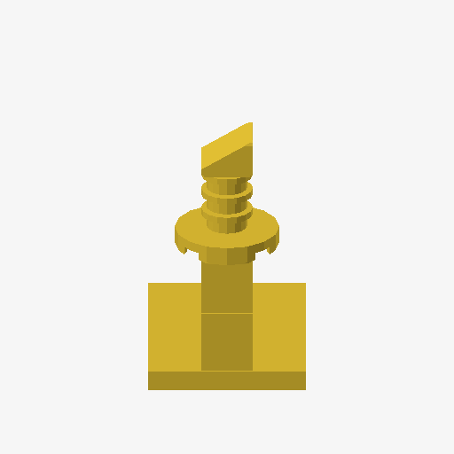
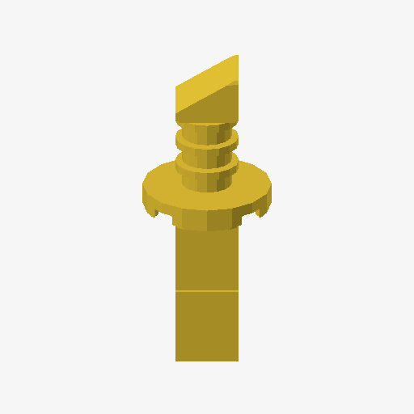

Qwen 积木生成 · 四项评分分析
A 组的主要问题是输出无法解析或未通过原始几何校验；B 组虽然全部取得分数，但大量不同提示词对应同一外形。两组提示词不同，应分别解读。
四项评分与覆盖率
| 测评输入 | 四项齐全 / 计划 | 覆盖率 | Pinv ↓ | VQAScore ↑ | PE ↑ | SigLIP2 ↑ |
|---|---|---|---|---|---|---|
| A · Qwen3-1.7B 基础版 | 80 / 260 | 30.77% | 39.67% | 0.002628 | 0.114945 | 0.004466 |
| B · Qwen1.7b LDR | 265 / 265 | 100.00% | 0.49% | 0.017922 | 0.117274 | 0.020514 |
表内为每条样本等权平均。三项图文指标先取每个样本 8 个视角的最高分，再对样本求平均。全量批次共 345/525 条四项齐全（65.71%），核对了 2,760 张视角图和 8,280 个逐视角图文分数。小样本的 3 条未计入。
| 分组 | 积木数均值 / 中位数 | 零碰撞样本 | Pinv 微平均 |
|---|---|---|---|
| A 组 | 52.06 / 24 | 25 / 80 | 2,325 / 4,165 = 55.82% |
| B 组 | 7.60 / 8 | 262 / 265 | 28 / 2,013 = 1.39% |
展开分布：中位数与四分位数
| 分组 | 统计量 | Pinv ↓ | VQAScore ↑ | PE ↑ | SigLIP2 ↑ |
|---|---|---|---|---|---|
| A | 中位数 | 33.33% | 0.000979 | 0.109448 | 1.117e-05 |
| A | 下四分位数 | 0.00% | 0.000200 | 0.087525 | 1.35e-06 |
| A | 上四分位数 | 73.75% | 0.002358 | 0.141097 | 7.074e-05 |
| B | 中位数 | 0.00% | 5.634e-05 | 0.112548 | 1.013e-05 |
| B | 下四分位数 | 0.00% | 3.624e-06 | 0.090038 | 1.21e-06 |
| B | 上四分位数 | 0.00% | 0.001141 | 0.135979 | 0.000109 |
A 组：只评到可解析片段
- 原始记录标注模型为 Qwen/Qwen3-1.7B 基础版（未微调）。260 条原始输出里，0 条通过原始几何校验；16 条另标为生成未完成。
- 178 条未检出符合严格格式的积木摆放记录；另有 2 条（A35_L4、A37_L2）用了当前共享零件库不支持的 4×4 零件。其分数保留为空，报告仅统计其余 80 条可解析片段。
- 这 80 条的 Pinv 宏平均为 39.67%，微平均为 55.82%。两者的差距说明，按积木摆放次数加权后，碰撞问题更突出。
- SigLIP2 均值受单个样本影响较大：A48_L4 贡献了该组分数总和的 89.8%，该组中位数只有 1.117e-05。
B 组：分数齐全，外形高度重复
对每条样本按视角顺序比较 8 张 PNG 的 SHA-256，265 条只得到 12 套不同渲染；260 条（98.11%）至少与另一条完全一致。最常见的两套合计 220 条（83.02%）。最常见的一套跨全部 21 个类别，例如 B01_L1 篮子、B17_L4 相机和 B19_L1 汽车。




图为两套最常见渲染的同一方位，颜色由测评统一设置。按零件编号和位姿另行核对，忽略颜色和记录顺序，B 组也只有 13 种不同的积木摆放组合。
有 239 条（90.19%）只用了 7 或 8 块。262 条在记录的装配顺序下没有检出碰撞，Pinv 宏平均为 0.49%；结合重复率，低碰撞率不能用来判断模型是否符合提示词或能否稳定搭建。VQAScore 与 SigLIP2 的中位数分别为 5.634e-05、1.013e-05。
输入档案为 Qwen1.7b.zip。LDR 未记录生成权重或微调状态，无法确认 B 与 A 是否使用同一生成权重。
展开 B 组 12 套渲染的分布
| 代表样本 | 样本数 | 涉及类别数 | 积木数 |
|---|---|---|---|
| B01_L1 | 135 | 21 | 8 |
| B01_L2 | 85 | 20 | 7 |
| B12_L2 | 15 | 6 | 4 |
| B21_L1 | 15 | 5 | 8 |
| B12_L5 | 6 | 5 | 3 |
| B45_L2 | 2 | 1 | 22 |
| B51_L1 | 2 | 1 | 7 |
| B12_L1 | 1 | 1 | 7 |
| B21_L5 | 1 | 1 | 24 |
| B32_L5 | 1 | 1 | 21 |
| B45_L5 | 1 | 1 | 23 |
| B53_L3 | 1 | 1 | 7 |
按提示词复杂度查看
每个 Level 的计划样本数为 A 组 52 条、B 组 53 条。下表先列 A 组覆盖与四项均值，再列 B 组。A 的覆盖率随 Level 变化，适合查看瓶颈，不宜把观察到的变化全归因于提示词复杂度。
| Level | A 覆盖 | Pinv ↓ | VQAScore ↑ | PE ↑ | SigLIP2 ↑ | B 覆盖 | Pinv ↓ | VQAScore ↑ | PE ↑ | SigLIP2 ↑ |
|---|---|---|---|---|---|---|---|---|---|---|
| L1 | 11/52 | 51.52% | 0.004816 | 0.095112 | 0.000693 | 53/53 | 0.00% | 0.031293 | 0.100966 | 0.018169 |
| L2 | 18/52 | 32.02% | 0.002529 | 0.095329 | 0.000312 | 53/53 | 0.69% | 0.032934 | 0.104951 | 0.010890 |
| L3 | 18/52 | 38.35% | 0.004696 | 0.105135 | 0.000465 | 53/53 | 0.69% | 0.021739 | 0.111906 | 0.010252 |
| L4 | 20/52 | 44.60% | 0.001033 | 0.140455 | 0.016282 | 53/53 | 0.00% | 0.002297 | 0.138565 | 0.031128 |
| L5 | 13/52 | 34.48% | 0.000506 | 0.133225 | 0.000770 | 53/53 | 1.08% | 0.001345 | 0.129985 | 0.032129 |
B 组 VQAScore 从 L2 的 0.032934 降到 L5 的 0.001345。与此同时，PE 和 SigLIP2 也有文本长度限制：PE（72 token）截断 A 组 18 条、B 组 59 条；SigLIP2（64 token）截断 A 组 33 条、B 组 106 条。B 组 L4、L5 的 106 条提示词全部被 SigLIP2 截断，不能用其分数验证完整长提示词的所有细节。
展开 21 类的覆盖与四项均值
| 类别 | A 覆盖 | Pinv ↓ | VQAScore ↑ | PE ↑ | SigLIP2 ↑ | B 覆盖 | Pinv ↓ | VQAScore ↑ | PE ↑ | SigLIP2 ↑ |
|---|---|---|---|---|---|---|---|---|---|---|
| basket | 2/15 | 0.00% | 0.001042 | 0.130350 | 0.002334 | 10/10 | 0.00% | 6.918e-06 | 0.077129 | 7.061e-06 |
| bed | 5/15 | 24.55% | 0.002561 | 0.151765 | 0.000135 | 10/10 | 0.00% | 0.000592 | 0.097604 | 8.247e-07 |
| bench | 5/15 | 58.34% | 0.003338 | 0.134831 | 6.586e-06 | 10/10 | 0.00% | 0.010085 | 0.104121 | 8.247e-07 |
| birdhouse | 3/15 | 38.66% | 0.000442 | 0.161550 | 0.003534 | 10/10 | 0.00% | 0.001343 | 0.158460 | 0.000430 |
| bookshelf | 3/15 | 65.28% | 0.002081 | 0.101115 | 1.2e-06 | 10/10 | 0.00% | 0.000968 | 0.114356 | 6.108e-06 |
| bottle | 5/15 | 34.96% | 0.000845 | 0.117179 | 7.066e-05 | 10/10 | 0.00% | 0.018329 | 0.159656 | 0.007316 |
| bowl | 9/15 | 48.26% | 0.001987 | 0.089874 | 1.069e-05 | 10/10 | 0.00% | 5.483e-06 | 0.108177 | 8.262e-05 |
| bus | 4/15 | 35.45% | 0.002608 | 0.116302 | 0.000951 | 10/10 | 0.00% | 2.718e-06 | 0.095218 | 8.717e-06 |
| camera | 1/15 | 28.57% | 1.661e-05 | 0.095385 | 3.928e-07 | 10/10 | 0.00% | 0.000117 | 0.123779 | 0.006119 |
| car | 5/15 | 33.26% | 0.000158 | 0.101551 | 2.301e-05 | 10/10 | 0.00% | 2.463e-06 | 0.123733 | 3.732e-05 |
| chair | 7/10 | 14.91% | 0.001424 | 0.111266 | 7.272e-05 | 15/15 | 0.00% | 0.016127 | 0.107618 | 5.373e-05 |
| guitar | 4/10 | 14.17% | 0.000341 | 0.111979 | 0.000144 | 15/15 | 0.00% | 5.044e-05 | 0.131420 | 0.000181 |
| jar | 4/10 | 64.21% | 0.000295 | 0.096338 | 9.886e-06 | 15/15 | 0.00% | 0.001575 | 0.125266 | 0.000224 |
| mug | 4/10 | 41.99% | 0.002855 | 0.092516 | 6.113e-07 | 15/15 | 3.81% | 0.009023 | 0.123208 | 7.225e-05 |
| piano | 2/10 | 54.29% | 0.000648 | 0.113257 | 0.000551 | 15/15 | 0.00% | 2.552e-05 | 0.103968 | 2.747e-06 |
| pot | 0/10 | — | — | — | — | 15/15 | 0.00% | 0.000213 | 0.121860 | 7.125e-05 |
| sofa | 4/10 | 49.03% | 0.003732 | 0.124578 | 0.000218 | 15/15 | 0.00% | 1.616e-06 | 0.083685 | 1.666e-06 |
| table | 5/10 | 38.34% | 0.002714 | 0.072418 | 2.636e-05 | 15/15 | 0.00% | 0.000521 | 0.085749 | 4.694e-06 |
| tower | 3/10 | 56.55% | 0.015506 | 0.197964 | 0.111206 | 15/15 | 4.85% | 0.266354 | 0.210007 | 0.351631 |
| train | 2/10 | 67.29% | 0.009614 | 0.117164 | 8.029e-06 | 15/15 | 0.00% | 2.785e-05 | 0.091432 | 2.683e-06 |
| vessel | 3/10 | 38.38% | 0.006098 | 0.117828 | 1.173e-05 | 15/15 | 0.00% | 0.001729 | 0.112812 | 0.000823 |
补充对照：BrickMore 与 Qwen A 的 80 条共同提示词
补充结果来自先前的 BrickMore_A260_20261117.rar。按同一组、提示词 ID、原文、类别和 Level 配对；评分模型、渲染设置及共同零件的网格与碰撞体一致。BrickMore A 的四项评分覆盖 260/260；下表仅比较 Qwen A 有分数的 80 条。
| 同一组 80 条提示词 | 样本 | Pinv ↓ | VQAScore ↑ | PE ↑ | SigLIP2 ↑ | Pinv 微平均 |
|---|---|---|---|---|---|---|
| Qwen A · 可解析片段 | 80 | 39.67% | 0.002628 | 0.114945 | 0.004466 | 55.82% |
| BrickMore A · 送评模型 | 80 | 1.01% | 0.074622 | 0.159313 | 0.038310 | 0.81% |
同样的 80 条中，BrickMore 的 VQAScore、PE、SigLIP2 分别在 78、64、61 条更高。Pinv 的均值也较低，但 BrickMore 使用提供的原始积木序列，Qwen 用由输出片段转换出的 LDraw 文件顺序，碰撞率受顺序和输出完整度影响。80 条中 BrickMore 原始几何校验标为通过的有 48 条；Qwen 为 0 条。
报告模型对比时，把「四项评分覆盖率」和「共同提示词上的分数」同时列出。A 组其余 180 条无法做成对评分；B 组应先确认生成权重和批量输出是否复用了同一模板，再用于同提示词的横向比较。本包没有可直接并入的 BrickGPT 或 BrickNet 评分。
展开 BrickMore A 的全部 260 条均值
| 输入 | 样本数 | Pinv ↓ | VQAScore ↑ | PE ↑ | SigLIP2 ↑ |
|---|---|---|---|---|---|
| BrickMore A · 全部送评 | 260 | 0.78% | 0.064872 | 0.156368 | 0.032826 |
全量结果用于描述 BrickMore A 自身；与 Qwen 配对时以上面的 80 条为准。
评分口径与核查来源
Pinv 是指定装配顺序下被判为碰撞的摆放次数占比，越低越好；宏平均按样本等权，微平均按摆放次数计。VQAScore 用模型首个回答 token 为 Yes 的概率；PE 用图文向量的余弦相似度；SigLIP2 用图文 logit 的 sigmoid 值。三个图文分数各自解读，不能直接当成准确率或合并成百分制。渲染为同一套正交参数、512×512、8 个固定角度与统一黄色。
回传文件与分数核查：本地 2,850 个回传文件与 RAR 解包副本的 SHA-256 一致。核对了阶段退出状态、提示词映射、图片摘要、逐视角分数和服务器汇总；主测评耗时约 19 分 22 秒。审计共通过 16,144 项检查，0 项失败。
- 服务器原始全量报告 · 345 条分数 · 525 条覆盖和分数
- 评分核查 JSON（含缺测 ID、重复渲染分组和补充对照数据）
展开评分模型快照及文件摘要
| 指标 | 评分模型 | 快照版本 |
|---|---|---|
| VQAScore | Qwen/Qwen2.5-VL-7B-Instruct | cc594898137f460bfe9f0759e9844b3ce807cfb5 |
| PE | timm/PE-Core-bigG-14-448 | 17aa0c25addfa14198fa2ff73d845a22d433432e |
| SigLIP2 | google/siglip2-giant-opt-patch16-384 | a713301b217d38485fb2204c808367d10bc3cc40 |
回传来源：G:\桌面\Results.rar
SHA-256：69e38826fa56b692f07d67af4924b06946b228e7937dfb9e6322d0c97879c6d4
补充来源：G:\桌面\BrickMore_A260_20261117.rar
SHA-256：e8c3f501d293484912a7c465f16881a7c2ec74f0dcf7f686c80fd5311c5fb437